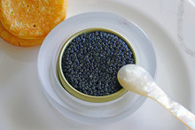

Gnocchi are soft, pillowy dumplings typically made from potatoes, flour, and eggs. They are a staple of Italian cuisine and can be served with a variety of sauces like pesto, marinara, or butter and sage.
| Potatoes | 1 kilogram |
|---|---|
| All-purpose flour | 200 grams |
| Large eggs | 1 |
| Salt | 1 tsp |
Arancini are deep-fried rice balls from Sicily, typically stuffed with ingredients like mozzarella, meat, or peas. The rice is often flavored with saffron and coated in breadcrumbs before frying, resulting in a crispy exterior.
| Cooked risotto | 2 cups |
|---|---|
| Parmesan cheese | 1/2 cup |
| Large eggs | 2 |
| Mozzarella cheese | 1/2 cup |

Caviar refers to the salt-cured eggs (roe) of sturgeon fish. It is considered a luxury delicacy, often eaten as a garnish or spread on crackers or toast, and prized for its rich, briny flavor and delicate texture.
| High-quality caviar | 1 oz |
|---|---|
| Crackers | 6 pieces |
| Sour cream | 1/4 cup |
| Chopped chives | 1 tbsp |
| Finely chopped red onion | 1 tbsp |